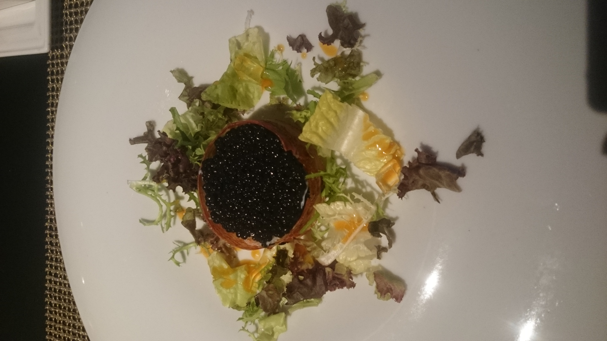
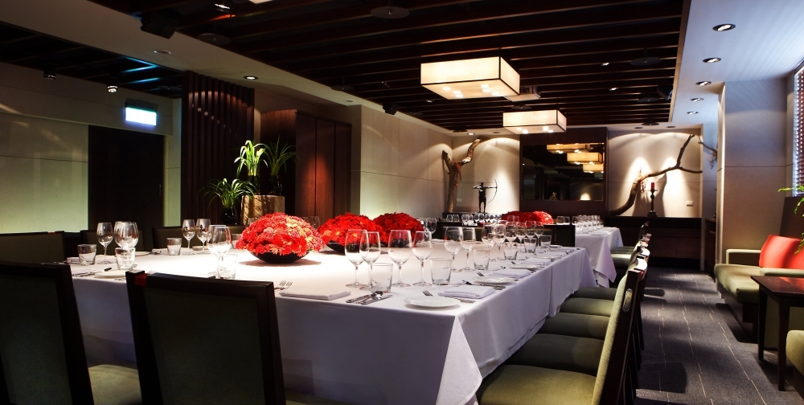
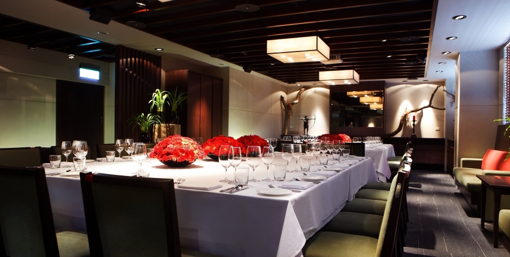
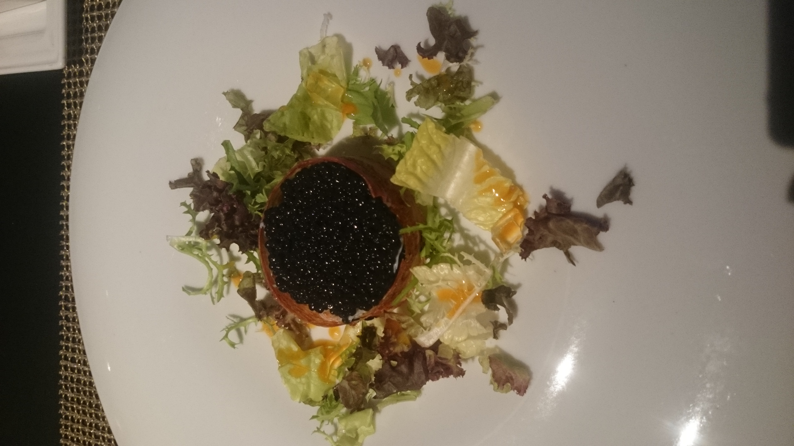
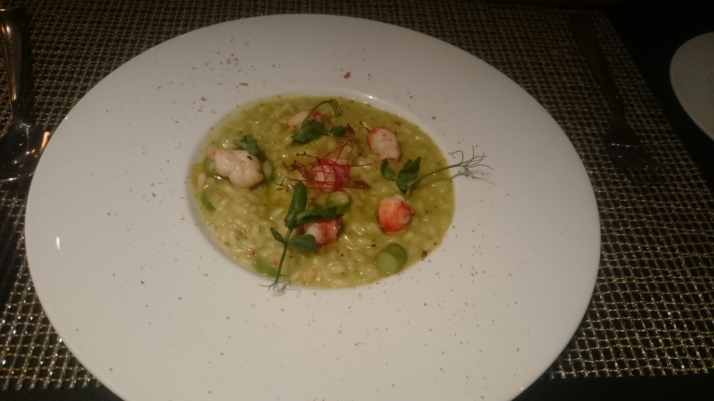
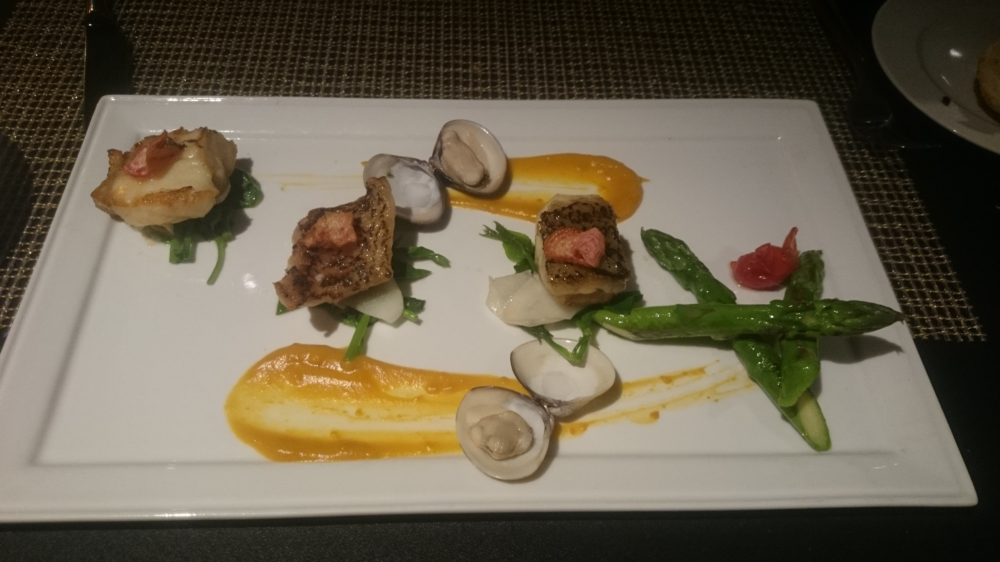
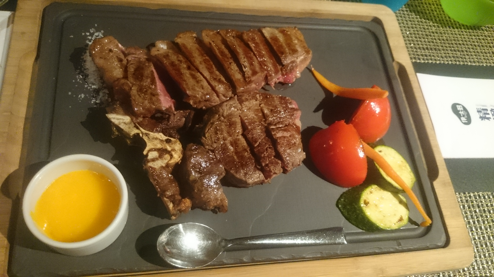

前菜-松露沙拉
那許吃了一口後皺眉頭，我立刻超興奮的問說 怎麼樣！太好吃了嗎！?他叫我吃一口下面鋪的菜，連我超不愛皺眉頭的人(因為會有皺紋haha) 都忍不住皺了一下眉頭！哇！這菜也太苦了吧，比苦瓜還苦！
以飯店地址168號命名的N°168PRIME牛排館，是一處Nature & Minimal Art自然簡約風格的專業牛排料理餐廳，強調Casual Fine Dining & Family Dining的餐飲特色及『牛肉』『時鮮』『紅酒』的精緻餐飲元素，特別引進全台首座超級夢幻烤爐，以最新穎獨步國際的牛排料理技術、活潑親切的飲食設計、『Daily Special當日時鮮』市集廚房概念，提供國人品味餐飲的完美平台。
 

那許吃了一口後皺眉頭，我立刻超興奮的問說 怎麼樣！太好吃了嗎！?他叫我吃一口下面鋪的菜，連我超不愛皺眉頭的人(因為會有皺紋haha) 都忍不住皺了一下眉頭！哇！這菜也太苦了吧，比苦瓜還苦！
我因為怕喝完湯後面主餐就吃不下了～留了約2口沒喝完～平時小鳥胃的那許看到我湯沒喝完～竟然搶去幫我把湯喝掉 (覺得天要下紅雨了還碎碎念說)這麼好喝的湯你竟然不喝完!這湯很精華耶!!大家就可想而知這牛肉湯有多好喝~~
耶~~~重頭戲登場！！期待度爆錶的龍蝦先生上菜嘍！！蒸烤加拿大鮮活龍蝦 (整尾)超~~~~~~~~~~肥資資又超級揪西的腳腳！！(尖叫聲)
圖片中的分量是一人份~~~所以是8oz~~送上來時已經幫我們分好，一份有3塊~牛排下面鋪磨菇、花椰菜、紅蘿蔔、小黃瓜、還有洋蔥
